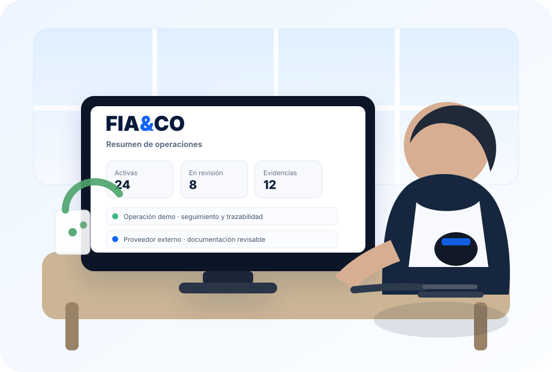

Compraventa
Partes, condiciones, importe demo, evidencias y cierre.
Abrir flujo →FIA&CO organiza acuerdos, documentos, evidencias, pagos preparados y logística coordinada desde un mismo entorno, con trazabilidad y control en cada paso.

Partes, condiciones, importe demo, evidencias y cierre.
Abrir flujo →Una operación comercial vinculada a recogida, tránsito y entrega.
Abrir flujo →Coordinación digital de recogidas, checkpoints, POD e incidencias.
Gestionar logística →Cadena de custodia y controles reforzados en modo preparado/demo.
Abrir porte especial →Perfiles normativos preparados, bienestar, documentación y revisión humana.
Abrir caso preparado →Premium, identidad, cartera demo, pagos preparados, legal y paneles.
Explorar la app →Condiciones, documentos y pruebas ligados al expediente.
Centro beta →Agente en shadow/read-only que observa, explica y recomienda.
Abrir Premium →Demostración de controles de identidad y biometría simulada.
Abrir identidad →Arquitectura preparada y simulación sin movimiento de fondos reales.
Abrir cartera →Actividad, expediciones, incidencias y seguimiento de piloto.
Abrir panel →Derechos, obligaciones, límites y separación de responsabilidades.
Abrir legal →Prueba la experiencia completa sin dinero real, PII real ni transporte físico realizado por FIA&CO.